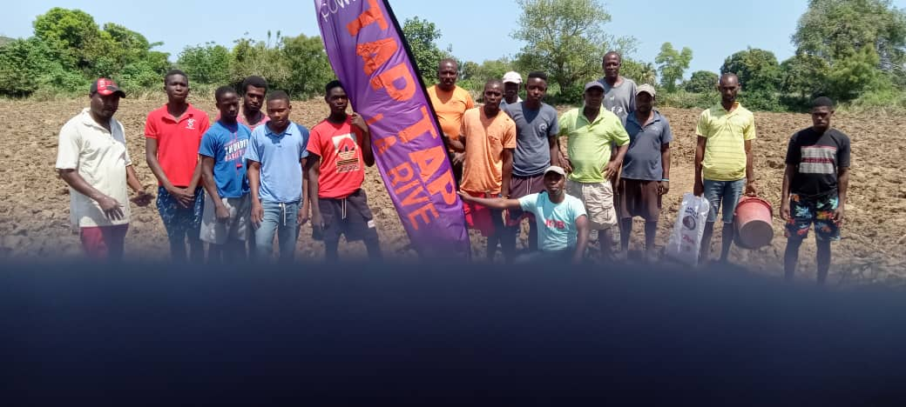
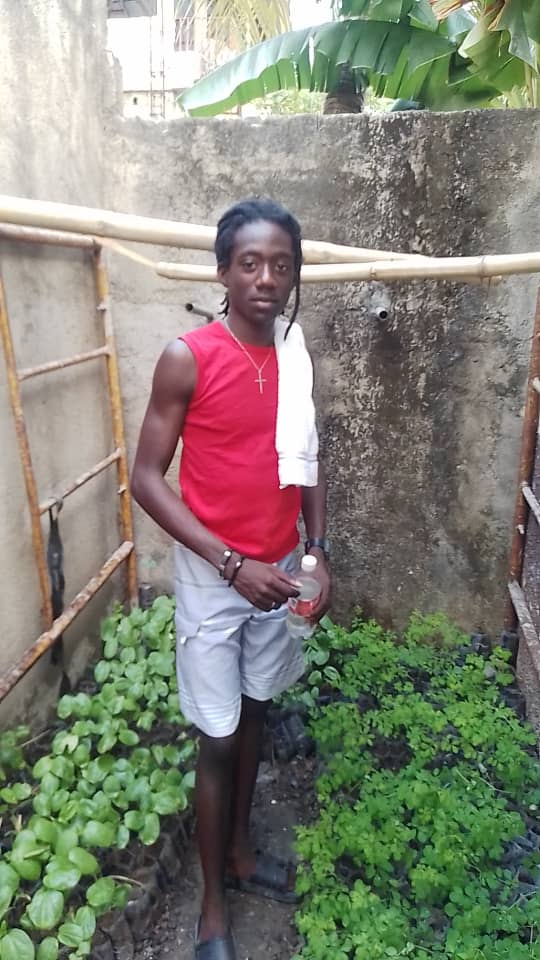

Quatre pôles d'action pour transformer la jeunesse haïtienne
Offres de travail agricole, formation et accompagnement pour jeunes de 18-35 ans. Chaque participant est placé dans une ferme partenaire avec un salaire régulier, des repas inclus et une certification à la sortie. L'emploi n'est pas une promesse, c'est le point de départ. La diaspora peut embaucher un jeune directement pour 360 dollars.

Compétences techniques agricoles, gestion coopérative, comptabilité simple, marketing local. Former des jeunes qui comprennent leur activité économique de bout en bout ... du sol à la vente. La technique sans la gestion ne crée pas d'autonomie.
Développement personnel, résolution de conflits, leadership communautaire. Nous formons des citoyens complets, pas juste des travailleurs. Un jeune qui sait gérer un conflit est plus productif qu'un technicien qui ne sait pas travailler en équipe.
Les membres de la coopérative deviennent propriétaires collectifs des outputs. Nourriture pour tous, revenus partagés, actifs collectifs. La différence entre un programme d'aide et un modèle économique, c'est que le modèle appartient à ceux qui le font vivre.

Berceau de KONKRET. C'est à Dubre, Milot, que le premier programme pilote a été lancé. Grand Bassin est le site actif du programme SAKALA 2026.
Deuxième zone d'expansion. Le modèle coopératif de Milot a été adapté aux réalités agricoles et communautaires de Trou-du-Nord.
Troisième zone active, lancée simultanément avec Trou-du-Nord. Limonade complète le réseau Nord avec sa propre dynamique agricole et ses propres partenaires.
Le programme SAKALA en partenariat avec BARSS représente l'aboutissement du modèle coopératif de KONKRET. 15 jeunes, 21 acres, 8 semaines, Grand Bassin, Milot.
SAKALA n'est pas un programme d'aide alimentaire. C'est une démonstration que l'agriculture haïtienne peut être productive, organisée et économiquement viable quand elle est pilotée par et pour les communautés locales.
Le programme Summer 2026 est la première phase concrète d'un modèle destiné à accompagner 50 000 connexions électriques dans la région de Milot en partenariat avec BARSS. Tu veux contribuer? Embauche un jeune directement.
Voir le Programme
KONKRET × BARSS (Bertil's Analytics Research Sciences & Sorceries) · Grand Bassin, Milot, Nord, Haïti